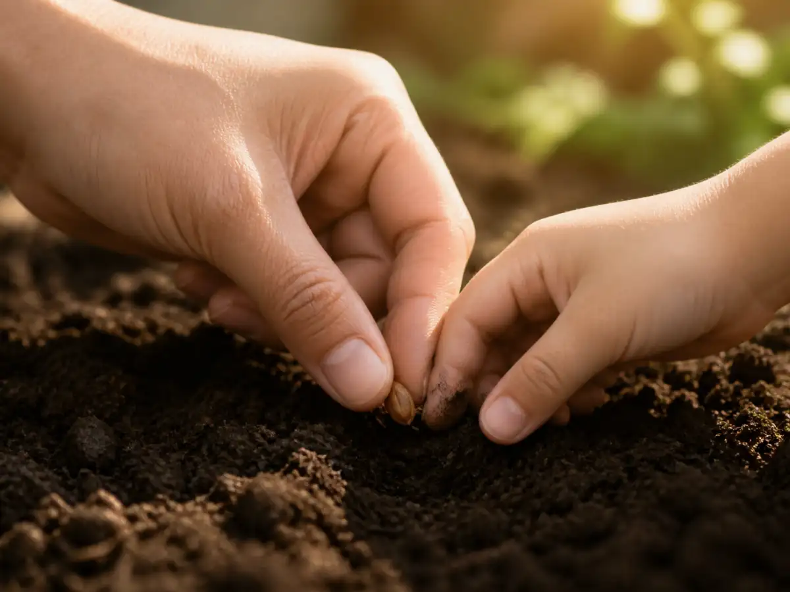

大树也从很小的时候开始
A Great Tree Starts Small
Page 1
大树还没有长大的时候
Before the Tree Was Big
A tiny green sprout rises from damp soil with drops of water on its leaves.
站在一棵很老的大树旁边，树干可能粗得两只手臂都抱不过来，树枝一直伸到高高的头顶。现在再看它，很难想象这棵树也曾经非常小。
两千多年前，Dàodé Jīng · 与老子和早期道家思想关系密切的经典。第六十四章偏偏让人去想这个画面。书里说：“合抱之木，生于毫末；九层之台，起于累土；千里之行，始于足下。”一棵要用双臂才能抱住的大树，是从很小的地方开始的；高高的台子，要一点一点把土堆起来；再远的路，也得从脚下第一步走起。
这些东西刚开始的时候，都不像最后的样子。大树一开始并不大，高台不会一下子出现，千里远行也不是从很远的地方开始。它们都从眼前一个很小的地方开始。
Stand beside a very old tree. Its trunk may be wider than your arms can reach, and its branches may spread high above your head. Looking at it now, it is hard to imagine that it was ever small.
More than two thousand years ago, the Dàodé Jīng · 《道德经》 · A short classic linked with Laozi and early Daoist thought. asked people to imagine exactly that. Chapter 64 says that a tree large enough to fill your arms begins from something tiny. Then it gives two more pictures: a high terrace begins with small amounts of earth, and a journey of a thousand lǐ · 里 · An old Chinese unit of distance whose exact length varied across time. begins beneath your feet.
None of these things starts the way it ends. The great tree does not begin great. The high terrace does not appear all at once. A long journey does not begin somewhere far away. It begins here, with something small.
Page 2
事情还小的时候
While Things Are Still Small
这一章还提醒人注意另一件事：很多麻烦，在还小的时候比较容易处理。衣服上的一根线松了，比整条缝都裂开以后容易补；两个人刚刚有一点不高兴，也比已经吵得谁都不听谁的时候容易解决；桌上刚乱一点，比整个房间都堆满东西以后容易整理。
《道德经》说：“为之于未有，治之于未乱。”事情还没有变得难办时，就开始留意；还没有真正乱起来时，就早点整理。
这样一来，“小”就不再等于“不重要”。有时候，事情还小，正说明还有机会好好照料它。
一棵树年轻的时候，也许只需要一点水、一块合适的土地和时间。许多年以后，它已经高高地站在那里，早就离那个小小的开始很远了。
The same chapter asks us to notice something else. A problem is often easier to handle before it grows. A loose thread is easier to fix before a whole seam opens. A little disagreement is easier to settle before everyone is shouting. A messy pile is easier to sort before it spreads across the whole room.
The Dàodéjīng says to deal with things before they become difficult and bring order before disorder has fully begun.
That changes the way we look at small things. Small does not always mean unimportant. Sometimes being small means there is still time to take care of something before it becomes much harder.
The same is true of the tree. When it is young, a little care can matter. Years later, when the trunk is enormous and the branches reach far overhead, the tree has already traveled a long way from its beginning.
Page 3
第一步一点也不像“千里”
One Step Does Not Look Like a Journey
再想象一条很长很长的路。第一步看起来实在没有什么了不起。抬起脚，再放下来，不过才往前走了一点点。可是，没有第一步，也就不会有后面的路。
《道德经》把大树、高台和远行放在一起，因为它们都有同一个特点：大的东西，是一点一点形成的。一捧土加上一捧土，一步接着一步。原本很小的东西，经过很长时间以后，可能已经完全看不出最初的样子。
这并不是说每一个小东西最后都会变得巨大。而是说，一件东西如果真的长得很大，它也一定经过了“小”的时候。
所以，开始值得认真对待。
Now imagine a road stretching far beyond anything you can see. The first step seems almost too small to matter. You lift one foot, put it down, and you are only a little farther from where you started. But there is no other way to begin a long journey.
The Dàodéjīng puts the tree, the terrace, and the journey beside one another because they all grow through small steps. A handful of earth joins another handful. One step follows another. Something that once looked tiny slowly becomes difficult to imagine in its first form.
This does not mean that every small beginning will automatically become something enormous. It means that when something does grow large, it still had to pass through the small part first.
So the beginning deserves attention.
Page 4
快做完了，也还没有做完
Almost Done Is Still Not Done
第六十四章还说到一个很容易发生的错误：人做一件事情，常常快成功的时候反而把它弄坏了。刚开始时，我们可能特别仔细，因为一切都还不熟悉。每一步都会检查，生怕做错。可是眼看快结束了，就容易觉得：“差不多了。”
偏偏这时候，也可能出错。所以《道德经》说：“慎终如始。”到了最后，也像刚开始的时候一样认真。
千里路从第一步开始，可最后几步也还是路；做一样东西从第一步开始，可最后一个地方没有做好，它就还不算真正完成。
好好开始很重要。好好结束，也很重要。
Chapter 64 also notices a very human mistake: people sometimes become careless when a job is nearly finished. At the beginning, we may be careful because everything feels new. We check our work and pay attention. Then we get close to the end and think, “I’ve got this.”
That is exactly when mistakes can happen. The Dàodéjīng says, “Be as careful at the end as at the beginning.”
A journey starts with the first step, but the last few steps still count. Building something begins with the first piece, but it is not finished until the final piece is in place.
Beginning well matters. Finishing well matters too.
Page 5
让树按照树的方式长
Let the Tree Be a Tree

A pair of large hands and a pair of small hands place a seed into damp soil.
这一章快结束的时候，还说到“辅万物之zìrán · 《道德经》中接近“自己如此”的概念，强调事物按照自身情况发展。而不敢为”。这里的“自然”，不是今天所说的山川森林，而更接近“自己如此”——让事物按照自身的情况发展。
这当然不是说什么都不管。一棵小树可能需要水，需要合适的土地，也需要人保护它。可是照料它，和什么事情都想替它控制，是两回事。
Lǎozǐ · 与《道德经》和早期道家思想密切相关的古代思想家。的思想常常在想这样的区别：人当然可以做事，可是不是每一件事都需要用更大的力气硬推，也不是每一个结果都能被人抓在手里。
最后，再看看那棵大树。很久以前，在任何人能站在它下面乘凉以前，它也有过一个小得很容易被忽略的开始。大树没有跳过那一步。千里远行，也没有。
Near the end of the chapter, the Dàodéjīng speaks about helping things follow their own zìrán · 自然 · A Dao De Jing idea close to ‘so of itself’: things becoming according to what they are.—their own way of becoming what they are.
This does not mean ignoring everything and hoping for the best. A young tree may need water, good soil, and protection. But caring for it is different from trying to control every moment of its growth.
That difference appears often in the Dàodéjīng. Lǎozǐ · 老子 · The ancient thinker linked with the Dao De Jing and early Daoist ideas. was interested in what happens when people stop trying to force every result and instead pay closer attention to how things are already unfolding.
Look once more at the great tree. Long before anyone could stand in its shade, it had a beginning so small that it would have been easy to overlook. The tree did not skip that beginning. Neither does a long journey.